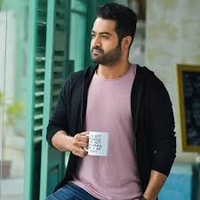

 Businessman - "Guns don't need Agreements" is a 2012 Indian Telugu-language action crime film written and directed by Puri Jagannadh. Based on a concept by Ram Gopal Varma and produced by R. R. Venkat under the banner R. R. Movie Makers, the film stars an ensemble cast featuring Mahesh Babu, Kajal Aggarwal, Prakash Raj, Nassar, Sayaji Shinde, Raza Murad, Subbaraju and Brahmaji. In the film, Vijay Surya arrives from Andhra Pradesh in Mumbai with aspirations to rule the city due to his grudge against the corrupt system in the country, but begins to face violent challemges from his enemies and the cops he supposedly respects. S. Thaman composed the film's music, and Shyam K. Naidu was the film's cinematographer. The film was made with a budget of ₹40 crore and was launched formally on 15 August 2011 at Hyderabad. Principal photography began on 2 September 2011 and was shot in Hyderabad, Mumbai and Goa. A few song sequences were shot in Bangkok. Filming ended on 10 December 2011 in 74 working days, one of the shortest periods in which a Telugu film has been shot. Businessman was released during Sankranthi on 14 January 2012 and received mixed reviews from critics who praised Babu's performance, soundtrack, background score, action sequences and dialogues, but criticized its direction, screenwriting and pace. The film grossed more than ₹90 crore and collected a distributor share of ₹40 crore, eventually becoming one of the highest-grossing Telugu films of 2012. Over the years, Jagannadh's writing, dialogues, direction, Babu's characterization & performance as Surya Bhai role gained cult status.The film was remade in Bengali as Boss in 2013. On public demand and film's gained popularity over years, the film is set to be re-released on Babu's birthday (August 9, 2023) across Telangana & Andhra Pradesh states only in selective theatres.[2]